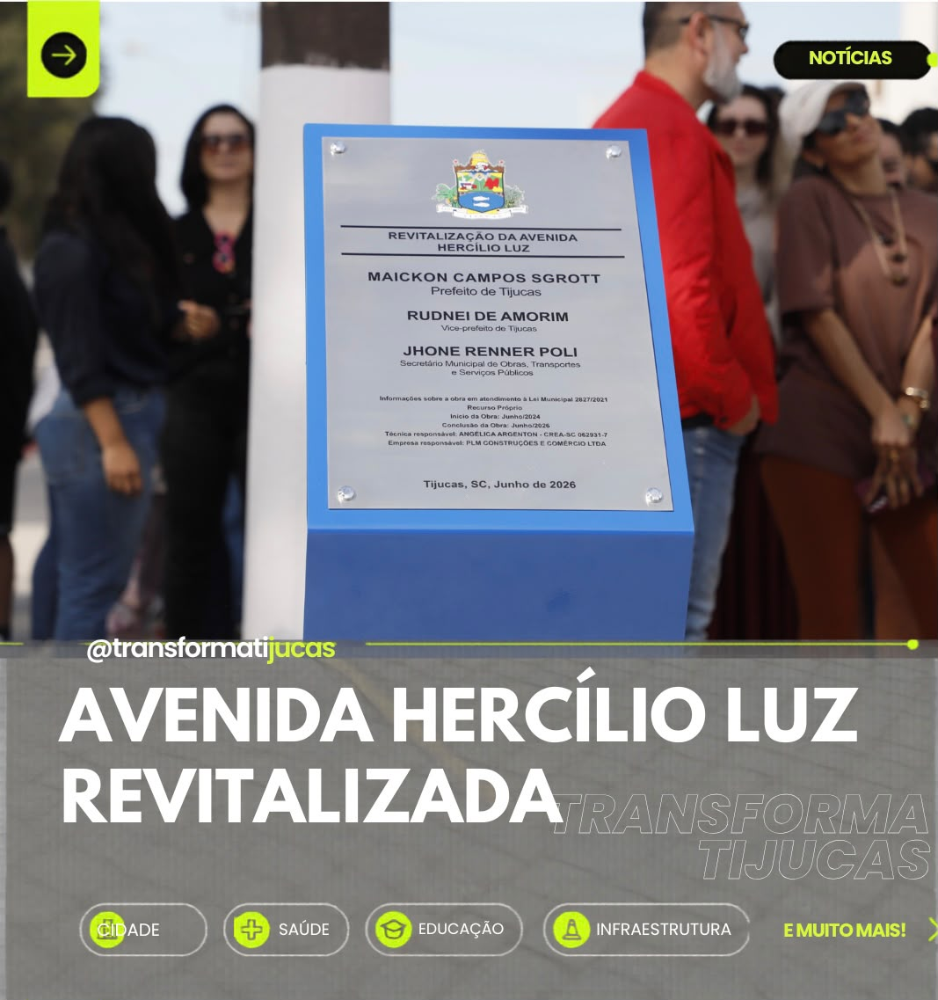

Avenida Hercílio Luz é totalmente revitalizada e marca novo momento para a mobilidade em Tijucas
A Prefeitura de Tijucas entregou oficialmente a revitalização completa da Avenida Hercílio Luz, uma das principais vias do município e um dos corredores mais importantes para a mobilidade urbana. A obra recebeu investimento de R$ 10.925.522,99 e faz parte do maior pacote de investimentos em infraestrutura da história recente da cidade.
A revitalização transformou completamente a avenida. Ao longo de toda a extensão foram executadas nova pavimentação asfáltica, calçadas acessíveis, pisos táteis, rebaixamentos de calçadas e diversas melhorias voltadas à acessibilidade, oferecendo mais segurança para pedestres, ciclistas, motoristas e pessoas com mobilidade reduzida.
Além das melhorias na circulação, a obra também modernizou toda a infraestrutura urbana da região central, proporcionando mais conforto para quem utiliza diariamente a avenida e valorizando um dos principais cartões de visita de Tijucas.
A revitalização também integra o programa Tijucas Mais Arborizada, com o plantio de novas árvores escolhidas especialmente para a arborização urbana. As espécies foram selecionadas para oferecer sombra, melhorar o conforto térmico e embelezar a cidade, sem causar interferências na rede elétrica.
Com um novo visual, a Avenida Hercílio Luz passa a oferecer um ambiente mais organizado, moderno e agradável, fortalecendo o comércio local e proporcionando mais qualidade de vida para moradores e visitantes.
A obra faz parte do conjunto de investimentos realizados pela Prefeitura em pavimentação, drenagem, mobilidade urbana, saúde, educação e infraestrutura, preparando Tijucas para acompanhar o crescimento dos próximos anos.